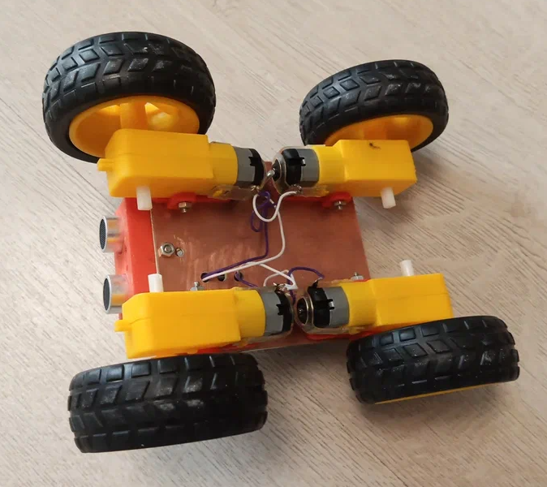

Фотографии ровера

Вид спереди
Вид сзади

Вид снизу
Начальная версия ровера с ультрозвуковым дальномером и простой прошивкой, которая подключает все модули и тестирует их базовые режимы
Ровер предназначен для повторения, изучения и дальнейшего творческого совершенствования
Этот 4-колесный робот прост в повторении, в основе конструкции - Arduino Nano, драйвер моторов MX1508 и ультразвуковой датчик HC-SR04. Ровер питается от двух аккумуляторов 18650 и может использоваться как платформа для различных робототехнических экспериментов.
Вид спереди
Вид сзади
Вид снизу

Электрическая схема подключения всех компонентов ровера
# Инструкция по сборке ровера и тестированию моторов и дальномера ## Описание проекта Простой 4-колесный робот на базе Arduino Nano с ультразвуковым датчиком расстояния, предназначенный для тестирования двигателей и работы с дальномером. ## Комплектующие ### Основные компоненты | Компонент | Количество | |-----------|------------| | Двигатель TT Motor | 4 шт. | | Колесо для TT Motor | 4 шт. | | Аккумулятор 18650 | 2 шт. | | Держатель аккумулятора 18650 | 2 шт. | | Плата Arduino Nano | 1 шт. | | Драйвер моторов MX1508 | 1 шт. | | Ультразвуковой датчик HC-SR04 | 1 шт. | ### Дополнительные материалы - Шасси для крепления компонентов - Держатель для дальномера - Выключатель питания - Соединительные провода - Паяльник и припой (при необходимости) ## Пошаговая сборка ### 1. Установка механических компонентов 1. Закрепите 4 двигателя TT Motor на шасси 2. Установите колеса на валы двигателей 3. Закрепите держатель для дальномера HC-SR04 ### 2. Электрические подключения #### Питание: 1. Установите аккумуляторы в держатели 2. Соедините держатели последовательно (7.4В) 3. Подключите выключатель питания в разрыв плюсового провода #### Двигатели: | Драйвер MX1508 | Двигатели | |----------------|-----------| | Выход A+ | Левый передний + | | Выход A- | Левый передний - | | Выход B+ | Левый задний + | | Выход B- | Левый задний - | | Выход C+ | Правый передний + | | Выход C- | Правый передний - | | Выход D+ | Правый задний + | | Выход D- | Правый задний - | #### Arduino Nano: | Пин Arduino | Подключение | |-------------|-------------| | D2 | HC-SR04 Trig | | D3 | HC-SR04 Echo | | D4 | MX1508 IN1 | | D5 | MX1508 IN2 | | D6 | MX1508 IN3 | | D7 | MX1508 IN4 | | 5V | HC-SR04 VCC | | GND | Общий земля | ## Программное обеспечение ### Функционал скетча 1. **Инициализация систем**: - Настройка пинов ввода/вывода - Тестовая индикация (3 мигания встроенного светодиода) - Остановка всех двигателей 2. **Тест двигателей**: - Последовательное тестирование пар двигателей - Вращение вперед/назад по 1 секунде - Индикация завершения теста 3. **Тест дальномера**: - Непрерывное измерение расстояния - Адаптивная индикация (частота мигания зависит от расстояния) ### Код для загрузки ```arduino // Здесь должен быть ваш код // (В оригинальной инструкции код не был предоставлен) ``` ## Тестирование и использование 1. Включите питание ровера 2. Наблюдайте последовательность тестов: - Индикация запуска - Тест двигателей (каждая пара должна вращаться) - Переход в режим теста дальномера 3. Для проверки дальномера подносите руку на разные расстояния - частота мигания светодиода будет меняться ## Безопасность - Проверяйте полярность подключения аккумуляторов - Убедитесь в надежности всех соединений перед включением - Избегайте коротких замыканий в цепях питания ## Видеоинструкция [Здесь может быть ссылка на видео по сборке и тестированию] ## FAQ **Q:** Двигатели не вращаются, что делать? **A:** Проверьте: 1. Полярность подключения аккумуляторов 2. Правильность соединений с драйвером моторов 3. Соответствие пинов в программе **Q:** Дальномер показывает неверные значения **A:** Убедитесь, что: 1. Датчик правильно подключен к 5V 2. Нет препятствий перед датчиком 3. Провода Echo и Trig подключены к правильным пинам ## Поддержка По вопросам сборки обращайтесь на forum.example.com или support@example.com